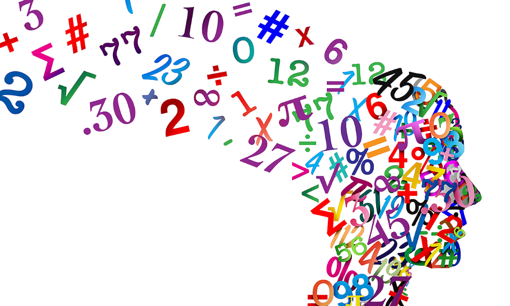

In the realm of numbers, there lies a curious and paradoxical entity
known as -0.08(3). At first glance, it appears to be an ordinary decimal
number, but upon closer examination, it unveils a deeper connection to
the enigmatic world of infinity. This seemingly insignificant number
holds the key to a mathematical question that has captivated
mathematicians for centuries. Its existence challenges our conventional
understanding of numbers and the very nature of infinity, leaving us to
ponder the paradoxical beauty of mathematics.
Before diving into the mystery, a couple of questions to test your
understanding of numbers. If you are not interested in the questions you
can skip them and go directly to the explanation.

Unveiling the Enigma of
Let's start saying that
is a different way of writing
(
the number goes on forever), that is the same as
. Now we have a new question:
What is
?
The easy answer is that the sum of all natural numbers is
.
This can be proved in a couple of different ways. The first one is a
little easier to understand and it's explanation can be found in
this video
. I won't explain it here because it's a little long and I don't want
to copy it. The second one is definitely more complicated and it's
based on the Riemann Zeta function (you can find more about it in
this video
).
The best part is that this is
not true!
The sum of all natural numbers is not equal to
, or at least it's not that simple.
The first video I linked is a little misleading. It uses a trick to
get to the result, an infinite series property: the "infinite
distributive law", it exists and can be used, but only for convergent
series! If you felled for it sorry, but otherwise we would be able to
explain that everything is equal to everything else. You can see more
about it in
this video
.
If you think about it that makes sense. If you sum all the natural
numbers you will get a number that goes on forever, so it cannot be a
finite number. It's not a number, it's a divergent series. This means
that it's not possible to assign a value to it. The sum of all natural
numbers is infinite!
Well no, not so simple as I said. Using the Riemann Zeta function we
can prove that the sum of all natural numbers is equal to
, but the Riemann Zeta function is defined only for
, so it's not defined for
. To get around this problem we can use the analytic continuation of
the Riemann Zeta function, that is a way to extend the domain of the
function to the whole complex plane. This is a little complicated and
I don't want to explain it here, but you can find more about it in
this video
.
This means that the sum of all natural numbers is not equal to
even if... it is.
So why am I telling you all this?
This intriguing puzzle serves as a reminder of the profound beauty and
complexity of mathematics. It challenges our preconceived notions,
tests our mental agility, and unveils the intricate fabric of the
mathematical universe. Mathematics is not just about numbers; it's
about exploring the world around us, uncovering hidden patterns, and
finding connections that were previously unseen. I hope this journey
through mathematical labyrinths has sparked your curiosity and
encouraged you to explore the world with a fresh perspective.